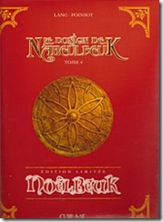
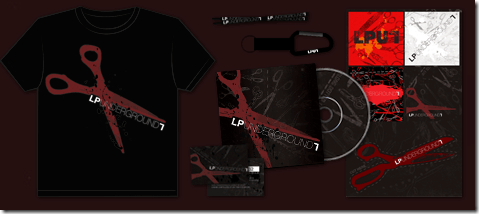
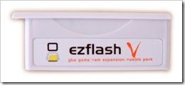
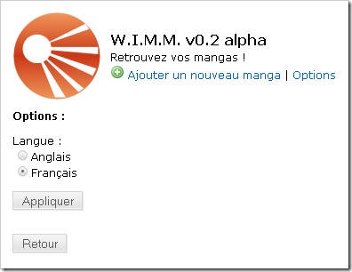

9 janvier 2008
Déjà la reprise...
Et oui après de super vacances il faut bien retourner bosser après :p
J'ai reçu mes premiers résultats du Bac Blanc : 12 en Philo et en Management, 15,5 en Anglais et en Maths ;)
A part ça, ma mère m'a acheté le Tome 4 du Donjon de Naheulbeuk (version Noël), j'ai renouvelé mon compte LPUnderground (LPU 7 BONUS PASS pour 30 euros
plus d'infos sur le LPU sur mes anciens posts) et je me suis pris un EZ-Flash 3 in 1 pour ma Nintendo DS Lite :)







A part ça, je l'ai posté sur Twitter mais je le reposte ici... J'ai mon permis !!! :D Héhé avec tout mes manoeuvres et vérifications réussies ^^ Concernant WIMM, le projet avance encore tout doucement, j'ai commencé la page des options où l'on pourra régler l'affichage des miniatures en liste ainsi que régler la langue du logiciel.


Dès que le projet atteindra une certaine maturité je le mettrai sur le net... la il y à encore beaucoup à faire, le site, nettoyer les scripts du logiciel... C'est tout, à non arf ! J'allais oublier... j'ai aussi changé le thème de mon blog (au cas où vous n'auriez pas remarquer :p) et le dessin en haut (Un fan-art de Death Note) est le fruit d'un de mes meilleurs ami : Rudy ! Merci à toi :)
Commentaires 2